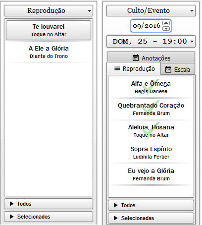

Você pode adicionar Músicas à lista de reprodução temporária ou de um culto/evento.
As músicas adicionadas à lista de reprodução temporária não ficarão salvas.
As músicas adicionadas à lista de reprodução de um culto/evento ficarão salvas.
Quando uma música da lista tiver sido marcada como tocada em um horário próximo ao evento ela ficará com uma marca d'água "check".
